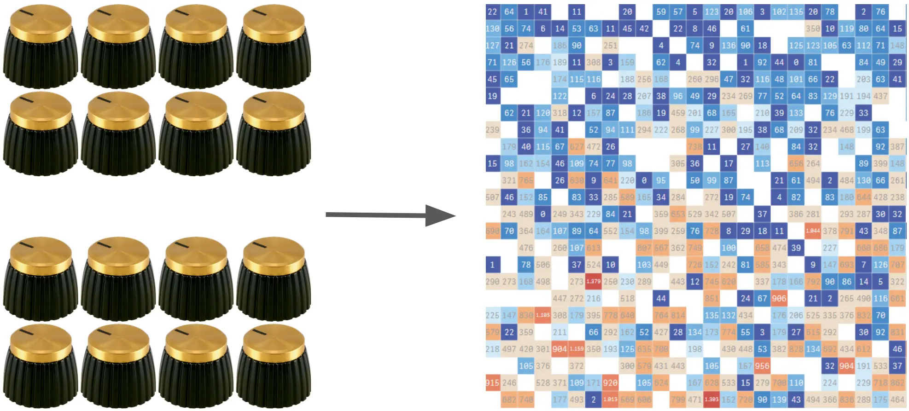
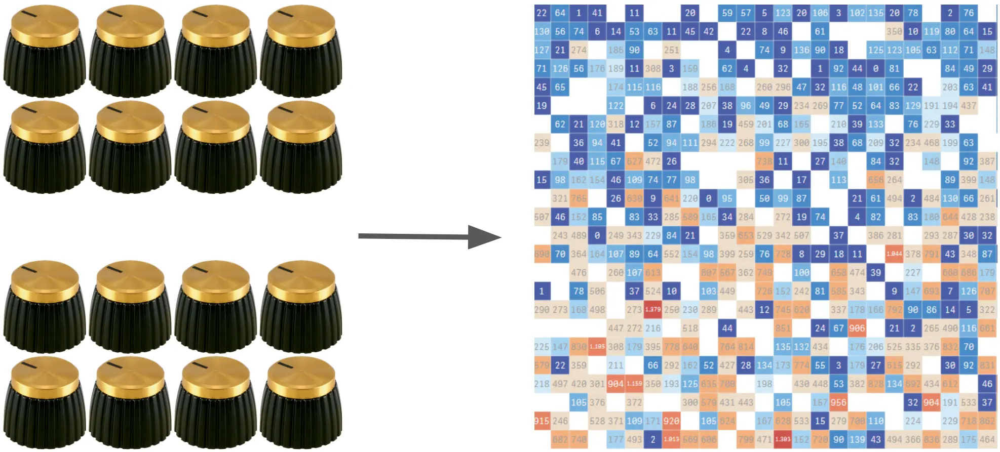

Loading.
PYMD slides requires a javascript-enabled browser.
Usage: Arrow buttons, page up/down, or space to navigate.
F for fullscreen. B for blank. Click on leftmost quarter for previous slide, the rest for next.
More info: see https://github.com/olofmogren/pymdslides/ .


 
